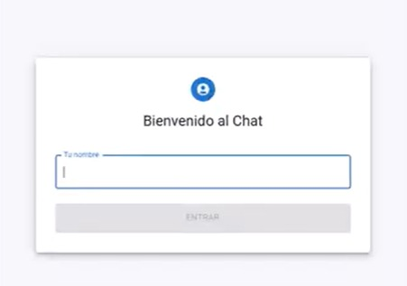

Plataforma Educativa GraduaT
Participación en el desarrollo de una plataforma educativa para apoyar a directores y maestros a supervisar el avance académico y la preparación para la PruébaT.
Estudiante de Ingeniería en Sistemas, con interés en el aseguramiento de la calidad del software. Me gusta entender cómo funcionan las aplicaciones y comprobar que cumplan lo que se espera de ellas.
Realizo prácticas en QA, ejecuto pruebas manuales, identifico errores y valido funcionalidades. También participo en proyectos académicos con enfoque en soluciones tecnológicas y trabajo en equipo. Busco seguir creciendo en testing y automatización.
Ingeniería en Sistemas · UMG
Prácticas QA · Proyectos académicos
Participación en el desarrollo de una plataforma educativa para apoyar a directores y maestros a supervisar el avance académico y la preparación para la PruébaT.

Participación en una plataforma interactiva para enseñar conceptos básicos de lenguaje y comunicación, con diferentes niveles de dificultad.

Aplicación de chat en tiempo real con salas, gestión de usuarios conectados e indicador de escritura. Interfaz web interactiva y comunicación en vivo.